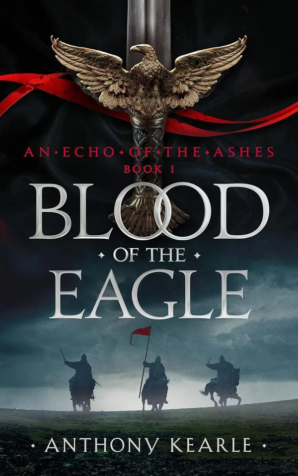
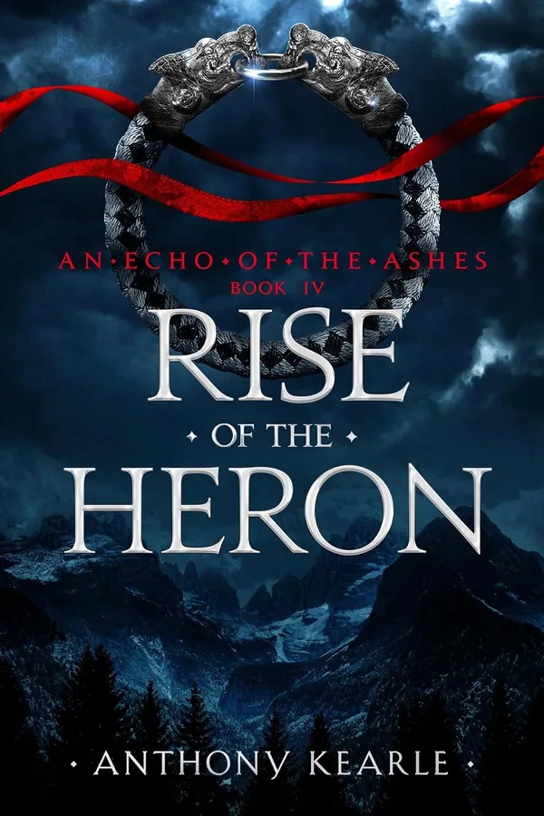
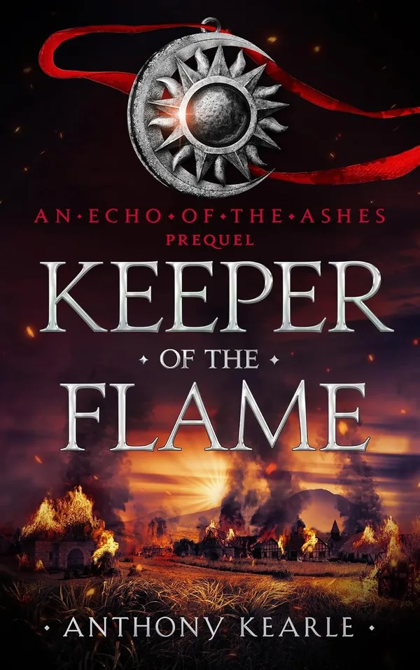
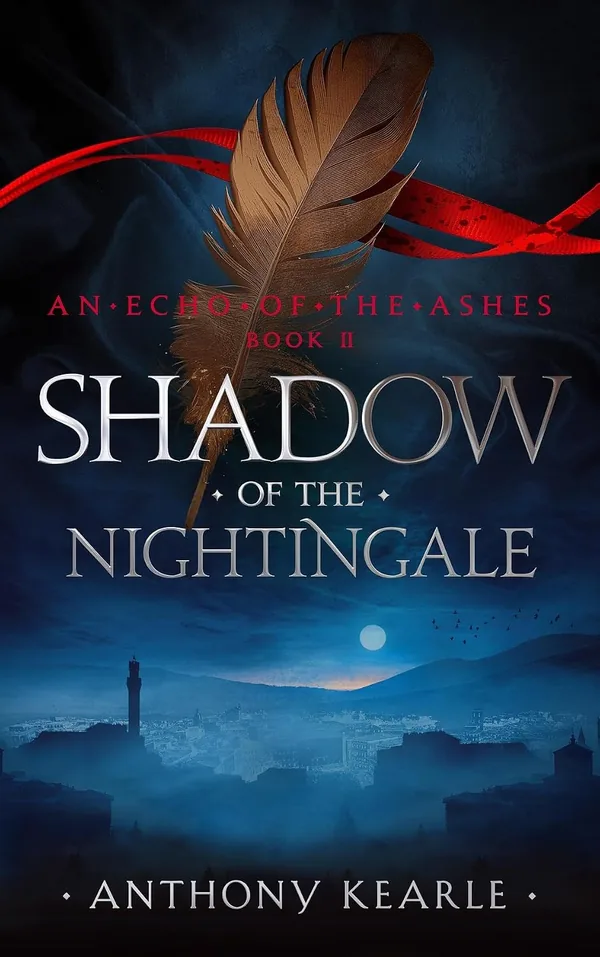
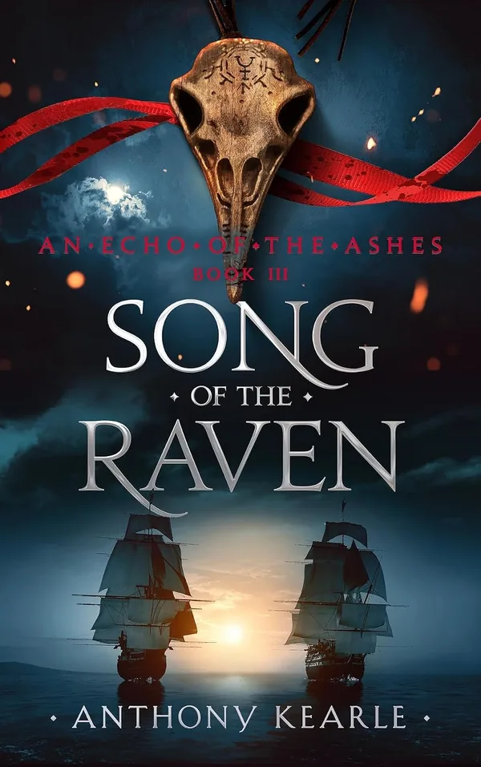

Book I: Blood of the Eagle
Evalio Delrovira, southern grand master of the Order of Kil'kara, is dead. His final words speak of something forever hidden that must be found.
- Kyler Landrey
- The son of a lowly tavern keeper, who leaves Adrestia to seek his destiny among the order.
- Lukas Raynor
- The reckless son of a great king, sent across the dreaded Steppe of Miera.
- Kitara
- Daughter to none and outcast by all. She has survived with her wit and her steel.
- Astrid Farrin
- Her father, a jarl of the Valkir, lies murdered. She has sworn to find the killer.
A red summer has come.
Book IV: Rise of the Heron
Peace flourishes beneath the Treaty of Kilgareth. The young Princess Kassandra Raynor is crowned regent of Annora, and her rule rests on the edge of a knife. Whispers spread through the sacred trees of Salvaar. Kitara leads her rabble of old soldiers south to see Annora one last time.
The Whisperer rises. Monsters hunt in the night. Peace is shattered.

The reading order



Anthony Kearle
Anthony found writing while he was studying graphic design at Federation University. A map he drew in class started him down the rabbit hole of world-building, and a story followed. He kept writing while working full time and doing freelance design on the side.
I spent probably eight months just creating this place.Anthony, to the Ballarat Times, 2021
He read up on mythology, folklore and fairy tales, and on medieval sword fighting and strategy, to build Annora, Salvaar and the lands around them. When he isn't writing, he goes hiking and spends time on sport and esports.
He was billed on the Fantasy in a Fractured World panel at All Booked Out, Ballarat's indie book fest, in 2025.